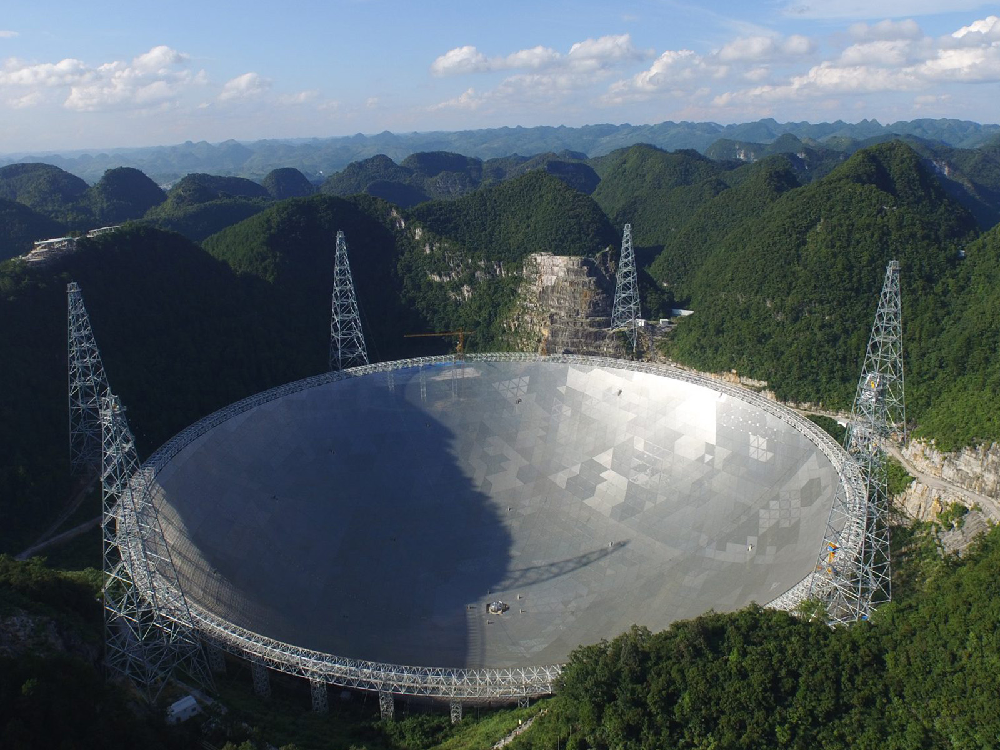
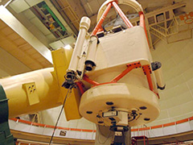
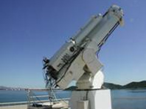

经典服务案例
-
2019-10-22
郭守敬望远镜光谱巡天数据全生命周期服务
郭守敬望远镜（LAMOST）是中国天文界第一个国家重大科技基础设施，是世界上光谱获取率最高的天文望远镜。中心为LAMOST设计开发了世界上最大的天文光谱数据库，提供包括原始数据传输、归档、备份，产品数据归档、备份，发布、共享、在线分析和数据融合等全方位的服务。
-
2018-10-22
500米口径球面射电望远镜技术支持服务
500米口径球面射电望远镜（FAST）是国家“十一五”重大科技基础设施，是世界最大单口径、最灵敏的射电望远镜，被誉为“中国天眼”。FAST于2016年9月25日落成，2020年1月11日通过国家验收，正式开放运行。中心为FAST科学观测和运行管理提供系统研发、数据管理、分析挖掘等多种支撑服务。
 -
2018-10-22
国内核心地基望远镜数据全生命周期服务
为兴隆2.16米望远镜、丽江2.4米望远镜、抚仙湖1米新真空太阳望远镜等一批国内核心天文观测设备提供时间申请、数据管理、传输、归档、备份、融合的统一服务，实现了数据和设备的开放共享，为研究人员提供资源集成平台，为望远镜运管团队提供个性化服务。
 -
2018-10-22
天文底片数字化项目数据汇交与技术服务
国家科技基础性工作专项项目“天文底片数字化”通过高精度底片扫描仪完成对国家天文台、紫金山天文台、上海天文台、云南天文台等自1901年至1999年跨越一个世纪的天文底片进行扫描和数字化。中心为项目提供数据清洗、数据整理服务和资料汇交，完成珍贵历史资料的开放共享。
